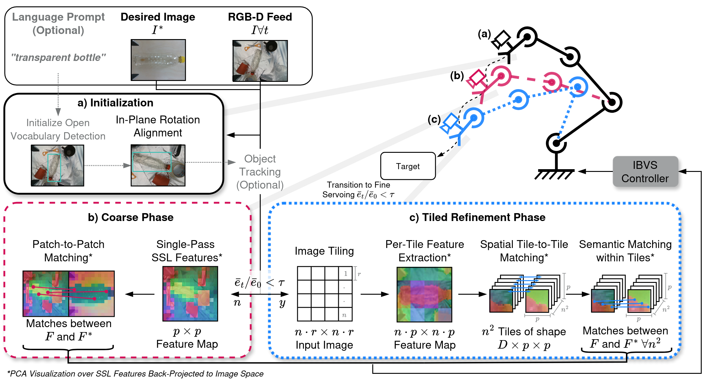
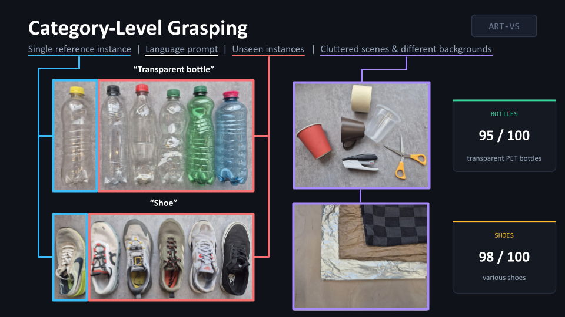

1University of Alicante · 2UAS Technikum Wien · 3TU Wien · 4Graz University of Technology · 5BOKU Vienna
Training-free visual servoing that generalizes to unseen objects and grasps them from a single reference image.
Abstract
Visual servoing with self-supervised Vision Transformer features enables training-free robotic positioning that generalizes to unseen objects, but faces a trade-off: coarse patch descriptors are robust yet imprecise, while high-resolution features are precise but slow and memory-hungry. ART-VS resolves this with a two-phase, backbone-agnostic strategy: it servos at the ViT's native resolution for stable long-range alignment, then switches to a tiled high-resolution phase that matches features tile-locally for precise convergence. Without task-specific training, ART-VS reaches 95.4% convergence under perturbation (18.8 pp over prior ViT-based servoing, 14.4 pp over full-resolution processing) while delivering over 10× higher effective FPS at 27% lower VRAM. On a real robot it grasps unseen instances from a single reference image: 95/100 transparent bottles and 98/100 shoes, across four backgrounds.
Method
A single strategy that keeps the robustness of low resolution and recovers the precision of high resolution — without paying the quadratic cost of processing everything at once.
Resolve in-plane rotation against the reference image; optionally isolate the target with a language prompt (LangSAM) plus a lightweight tracker (LightTrack) for cluttered scenes.
Single-pass ViT encoding with global patch-to-patch correspondences at native resolution — robust to appearance change and large pose gaps.
Once mean error drops below τ = 0.20 (an 80% reduction), the image is split
into non-overlapping tiles matched tile-locally — recovering full-resolution precision without
quadratic cost.

Real robot
200 category-level trials from a single reference image per category: five unseen instances each of transparent bottles and shoes, across four backgrounds — plain wood, aluminium foil, kraft paper, and kitchen towel.

Honest failure modes from the paper's analysis — where ambiguous geometry or challenging optics push the match past its limits.
Simulation
Perturbed Hollywood-poster scenes, 500 trials per method. ART-VS variants lead on convergence and precision while staying well within a real-time budget.
| Method (perturbed) | Conv.% | Pos. (cm) | Orient. (°) | VRAM (MB) | FPS |
|---|---|---|---|---|---|
| AKAZE-IBVSclassical | 64.8 | 0.09 | 0.08 | — | 1.7 |
| ViT-VS DINOv2-308baseline | 76.6 | 2.15 | 1.83 | 1230 | 14.4 |
| ViT-VS DINOv3-1440full 1440p frame, no tiling | 81.0 | 1.65 | 1.43 | 2431 | 0.9 |
| ART-VS DINOv27×7 tiles | 87.2 | 0.88 | 0.78 | 2174 | 10.5 |
| ART-VS DINOv36×6 tiles · best convergence | 95.4 | 1.01 | 0.88 | 1767 | 11.9 |
| ART-VS AM-RADIO6×6 tiles · best precision | 91.0 | 0.81 | 0.69 | 2779 | 6.8 |
The number in a baseline name is the ViT input resolution — e.g. DINOv2-308 and DINOv3-1440 process the frame at 308 px and at the full 1440p (1440×1080) resolution — whereas ART-VS “N×N” denotes the adaptive tiling grid used instead. FPS is the effective frame rate (total iterations / wall-clock time). Highlighted rows are ART-VS; bold marks the best convergence (95.4%) and the best positional / orientation precision (0.81 cm / 0.69°), reported over converged trials.
Watch
The full supplementary video: method overview, simulation benchmarks, and real-robot grasping across all backgrounds.
Cite
ART-VS is accepted at IROS 2026. Until the proceedings appear, please cite the arXiv preprint.
@article{scherl2026artvs, title = {ART-VS: Adaptive Resolution Tiling for Vision Transformer Visual Servoing}, author = {Scherl, Alessandro and Neuberger, Bernhard and Schwaiger, Simon and Mulero-P{\'e}rez, David and Muster, Lucas and Garc{\'i}a-Rodr{\'i}guez, Jos{\'e}}, journal = {arXiv preprint arXiv:2606.19089}, year = {2026} }